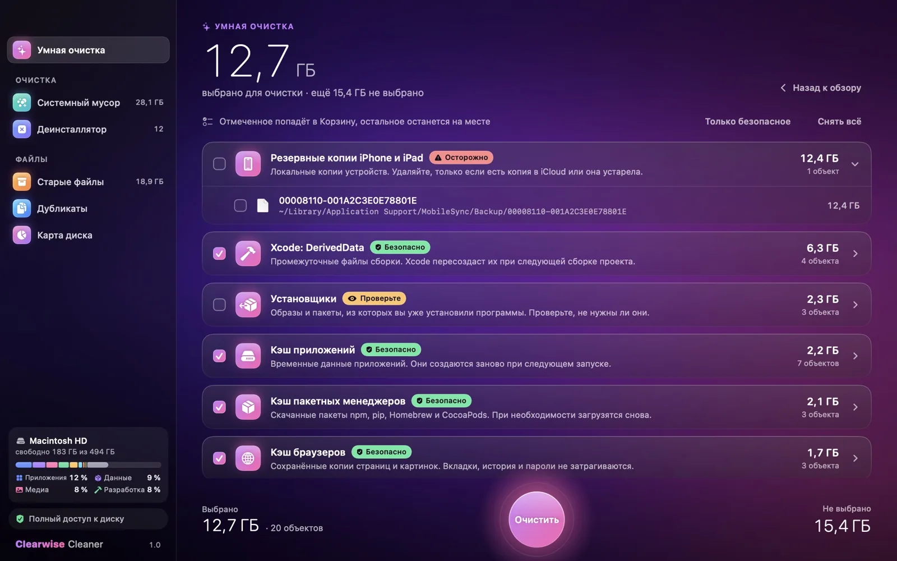
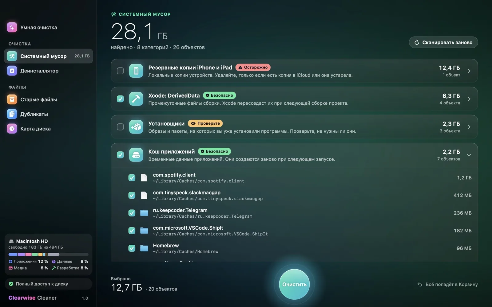
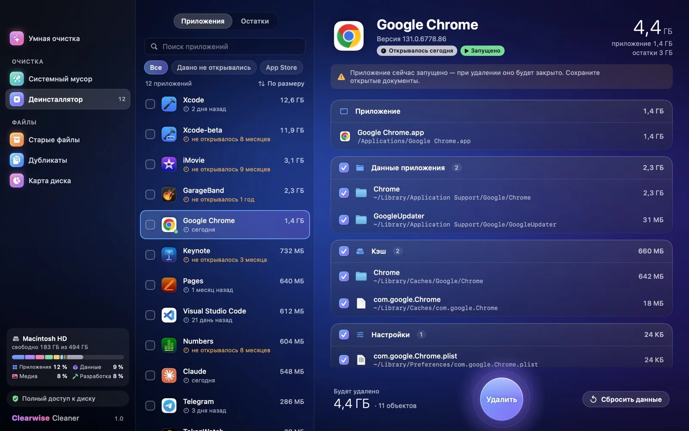
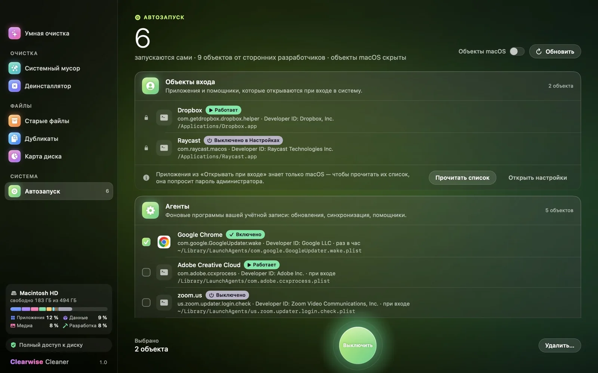
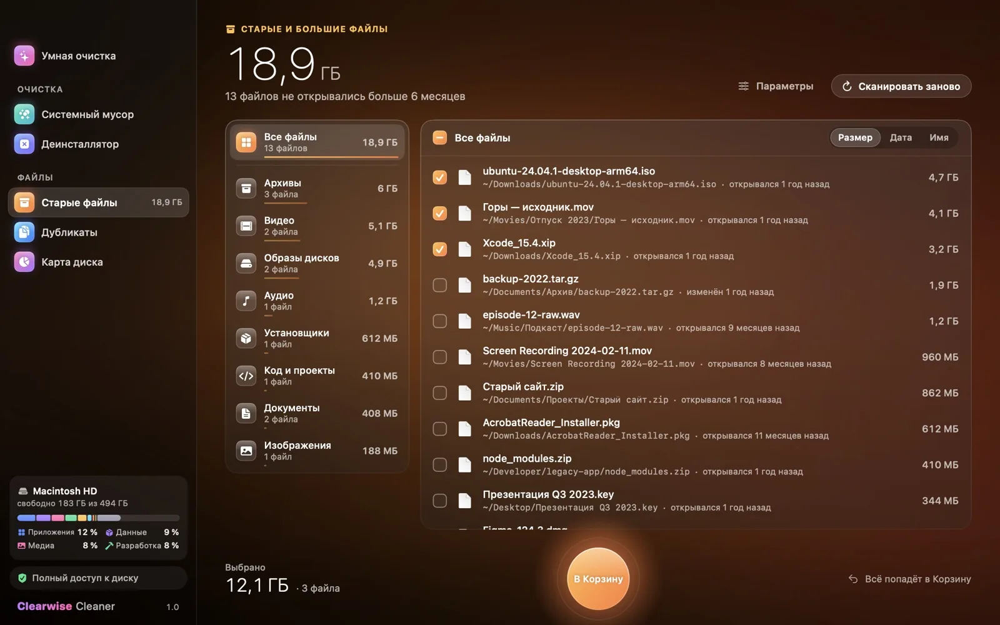
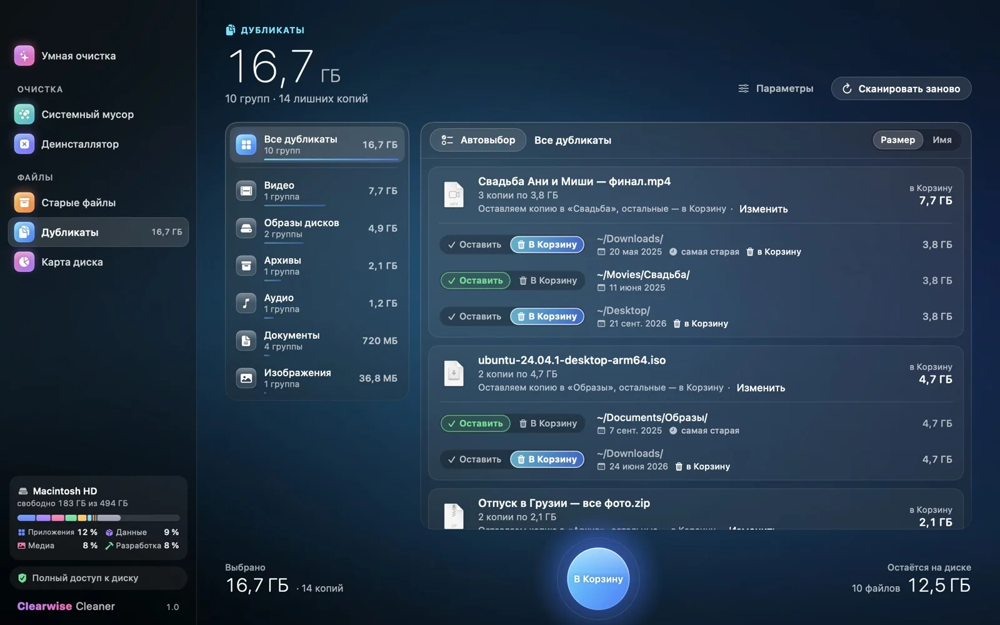
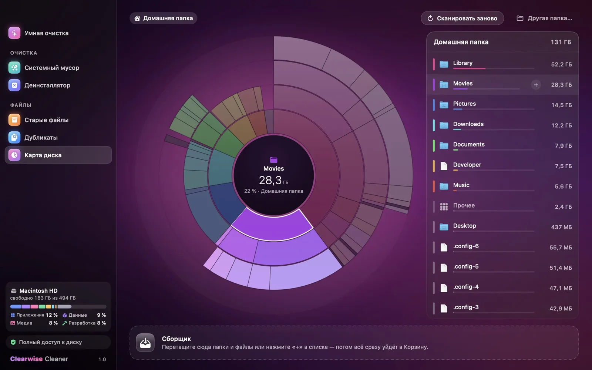
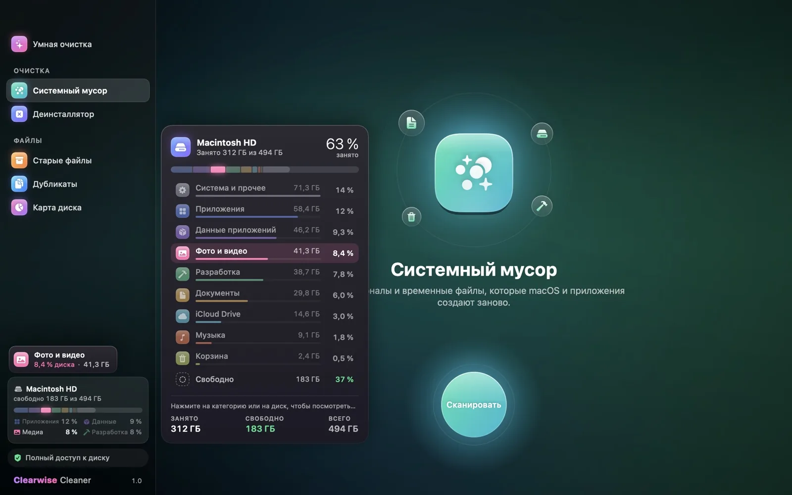
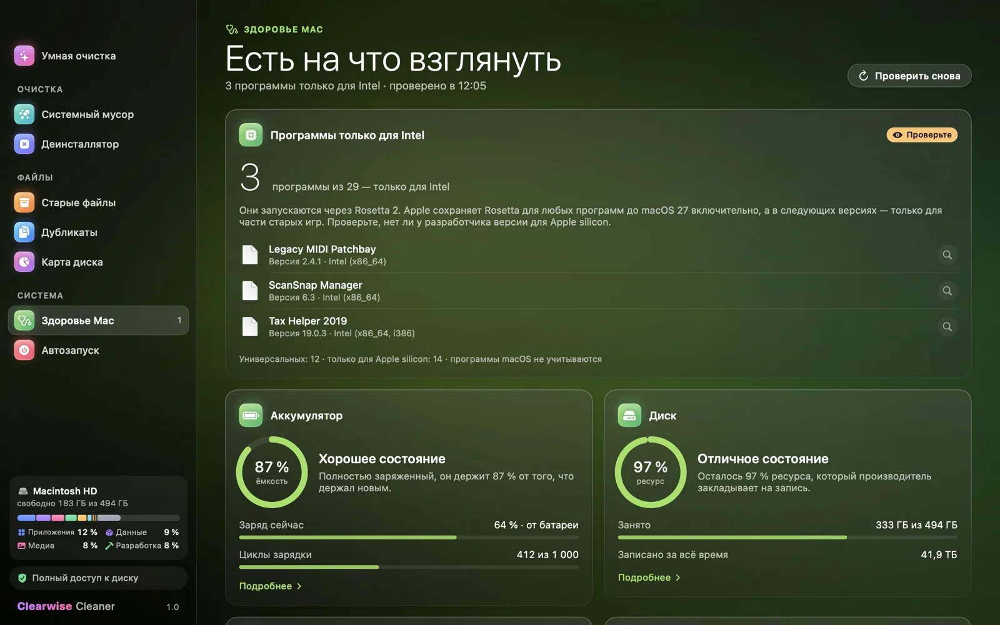
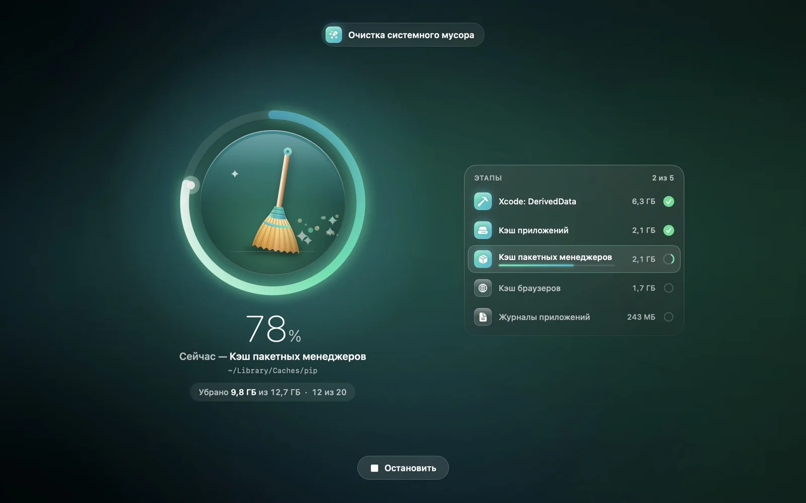

Больше места на Mac
без лишнего риска
Clearwise Cleaner находит системный мусор, остатки удалённых приложений, старые и повторяющиеся файлы. Перед удалением видно каждый путь, а всё убранное сначала попадает в Корзину.
Девять инструментов в одном окне
Выберите раздел слева, как в самом приложении. Скриншоты сделаны в Clearwise Cleaner на демо-данных.
Умная очистка
Одно сканирование: мусор, остатки удалённых приложений, старые файлы и неиспользуемые программы. Безопасное выбрано сразу, остальное остаётся на ваш выбор.

Системный мусор
Кэши приложений и браузеров (без истории, паролей и cookies), кэши Slack, Discord, VS Code и других программ на Electron, журналы, отчёты о сбоях, Xcode DerivedData, кэши npm, pip и Homebrew, старые установщики, прошивки iPhone и Docker. Три режима: Бережная, Усиленная, Максимальная.

Деинсталлятор
Удаляет приложение вместе с настройками, кэшами, контейнерами, агентами запуска и помощниками. Отдельная вкладка находит следы программ, которые уже удалили перетаскиванием в Корзину.

Автозапуск
Что стартует вместе с Mac: агенты, системные службы и объекты входа, с владельцем, подписью и состоянием. Выключить можно обратимо, удалить — в Корзину. Службы macOS не трогаются.

Старые и большие файлы
То, что вы не открывали месяцами, и самые крупные файлы. Ничего не выбирается само.

Дубликаты
Одинаковые файлы по содержимому, а не по имени. Одна копия всегда остаётся.

Карта диска
Диаграмма-«солнце»: щелчок открывает папку, лишнее собирается в «Сборщик».

Хранилище
Чем занят диск по категориям, в процентах и гигабайтах. Любую категорию можно раскрыть до файлов, даже «Система и прочее».

Здоровье Mac
Износ аккумулятора и SSD, свободное место и программы только для Intel, которым скоро не хватит Rosetta. Только проверка: ничего не меняет и не удаляет.

«В Корзине 2,1 ГБ», а не «освобождено»
Пока Корзина не очищена, место всё ещё занято, и приложение так и пишет. Что удалено навсегда и что освободил Docker, показано отдельными строками.

Осторожный по умолчанию
Всё уходит в Корзину
Безвозвратно удаляется только содержимое самой Корзины и только после отдельного подтверждения. Удалить сразу навсегда можно лишь по явной галочке.
Защищённые места
Системные папки, Связка ключей, Почта, Сообщения, iCloud Drive, медиатеки «Фото» и «Музыка» и встроенные приложения macOS не трогаются никогда.
Видно каждый путь
Личные файлы не выбираются автоматически, только безопасный мусор. Перед удалением виден полный путь каждого файла.
Без интернета
Приложение ничего не отправляет и не собирает: ни аналитики, ни телеметрии. На этом сайте тоже нет счётчиков и cookies.
Режимы — это галочки
Бережная, Усиленная и Максимальная только отмечают разное после сканирования. Корзина, последняя копия каждого iPhone и тома Docker не отмечаются никогда.
Открытый код
Весь код на GitHub под лицензией MIT. Можно проверить, что именно удаляется, и собрать приложение самому.
Полная версия и Lite
Правила App Store не дают приложению прав администратора и доступа ко всему диску. Поэтому весь функционал есть только в полной версии с этого сайта. Lite из App Store проверяет папки, которые вы выбрали сами.
Clearwise Cleaner
Полная версия. Все модули, системный мусор с правами администратора, Docker, деинсталлятор, автозапуск и MCP-сервер для ИИ-ассистентов. Бесплатно.
Clearwise Lite Скоро в App Store
Безопасная часть внутри песочницы App Store: кэши в выбранных папках, старые файлы, дубликаты, карта диска. Обновляется через App Store. Бесплатно.
| Модуль | Полная | Lite |
|---|---|---|
| Умная очистка | Да | В выбранных папках |
| Системный мусор | Всё, включая системные журналы и Docker | Кэши и журналы пользователя, кэши разработчика |
| Деинсталлятор и остатки | Да | Нет |
| Автозапуск | Да | Нет |
| Старые и большие файлы, дубликаты | Да | В выбранных папках |
| Карта диска | Да | Да |
| Хранилище по категориям | Да | Без раскрытия «Система и прочее» |
| Здоровье Mac | Да | Уточняется |
| MCP-сервер для ИИ-ассистентов | Да | Нет |
| Корзина, режимы, RU/EN, без телеметрии | Да | Да |
Знает, где копятся гигабайты у разработчика
- Xcode: DerivedData, старые архивы, Device Support и кэш симуляторов
- кэши npm, Yarn, pnpm, Bun, pip, uv, Homebrew, Gradle, CocoaPods, SwiftPM, Cargo и браузеры Playwright
- Docker: кэш сборки, образы без имени, остановленные контейнеры. Тома с данными не трогаются
- прошивки iPhone и iPad (.ipsw)
MCP-сервер для Claude, Cursor и других ассистентов
Внутри приложения лежит clearwise-mcp. Ассистент ищет мусор и убирает только то, что вы одобрили. Всё удаляющее сначала выполняется «на сухую».
# Claude Code
claude mcp add clearwise -- \
"/Applications/Clearwise Cleaner.app/Contents/MacOS/clearwise-mcp"Установка за минуту
Скачайте DMG
Файл
Clearwise-Cleaner-1.2.1.dmg, 9,1 МБ. Подходит для Apple silicon и Intel.Перетащите в «Программы»
Откройте образ и перенесите Clearwise Cleaner в папку «Программы».
Подтвердите первый запуск
Системные настройки → Конфиденциальность и безопасность → «Всё равно открыть». Это нужно один раз.
Дайте полный доступ к диску
По желанию, но без него часть мусора не видна. Приложение само покажет, где его включить.
Приложение пока не заверено Apple: для этого нужен платный аккаунт разработчика Apple. Проверить, что файл не изменён по дороге: shasum -a 256 Clearwise-Cleaner-1.2.1.dmg и сравнить с файлом .sha256 из релиза.
Частые вопросы
Это правда бесплатно?
Да. Без подписки, пробного периода и ограничений по объёму. Код открыт под лицензией MIT.
Clearwise ускорит мой Mac?
Мы не обещаем ускорения. Приложение освобождает место на диске и показывает, что его занимает. Если на диске почти не осталось места, macOS действительно работает медленнее, и очистка помогает. В остальных случаях скорость не изменится.
Можно ли случайно удалить что-то важное?
Сам выбирается только мусор, который программы создают заново. Личные файлы, старые документы и дубликаты вы отмечаете сами. Всё уходит в Корзину, откуда файл можно вернуть. Системные папки, Связка ключей, Почта, Фото и iCloud Drive защищены.
Зачем полный доступ к диску?
macOS закрывает часть папок с кэшами и журналами даже от программ пользователя. Без доступа Clearwise работает, но находит меньше. Доступ включается в Системных настройках, приложение покажет где. Данные никуда не отправляются: у приложения нет доступа в интернет.
Чем это отличается от CleanMyMac?
Clearwise бесплатный, с открытым кодом и без телеметрии, а всё удалённое сначала лежит в Корзине. В нём нет антивируса, обновления приложений и «ускорения» — только место на диске, автозапуск и проверка состояния Mac.
Какие нужны macOS и Mac?
macOS 15 Sequoia или новее. Один DMG работает и на Apple silicon, и на Intel.
Как обновить или удалить Clearwise?
Чтобы обновить, скачайте новый DMG и перетащите приложение в «Программы» поверх старого. Чтобы удалить, перенесите его в Корзину.